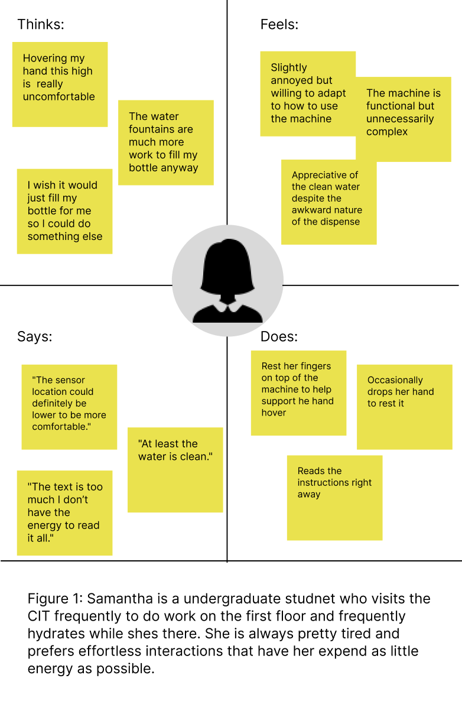
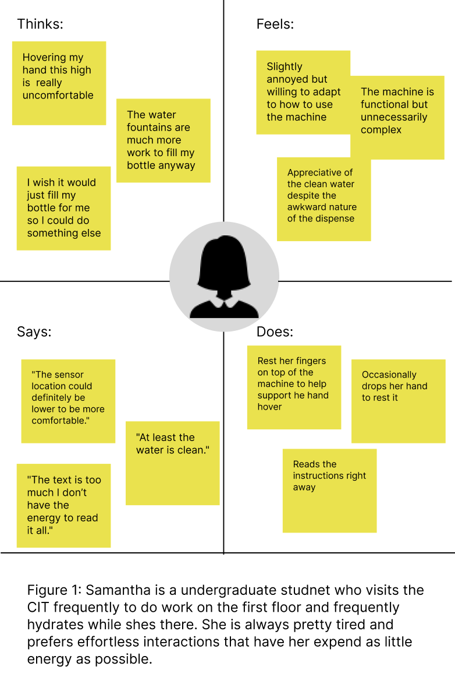

Personas:
Overview:
Using the observations and interviews answers from the interviews tab, I constructed two different personas based on the most common answerws and experince with the interface. I do this using a four quadrant empathy map where I describe what each person would think, feel, do, or say while interacting with this interface but in different scenarios. At the bottom of the mpathy maps I briefly describe the user and within the map I point out the problems they face as well as how the user is represented.
Persona Empathy Maps :
 
